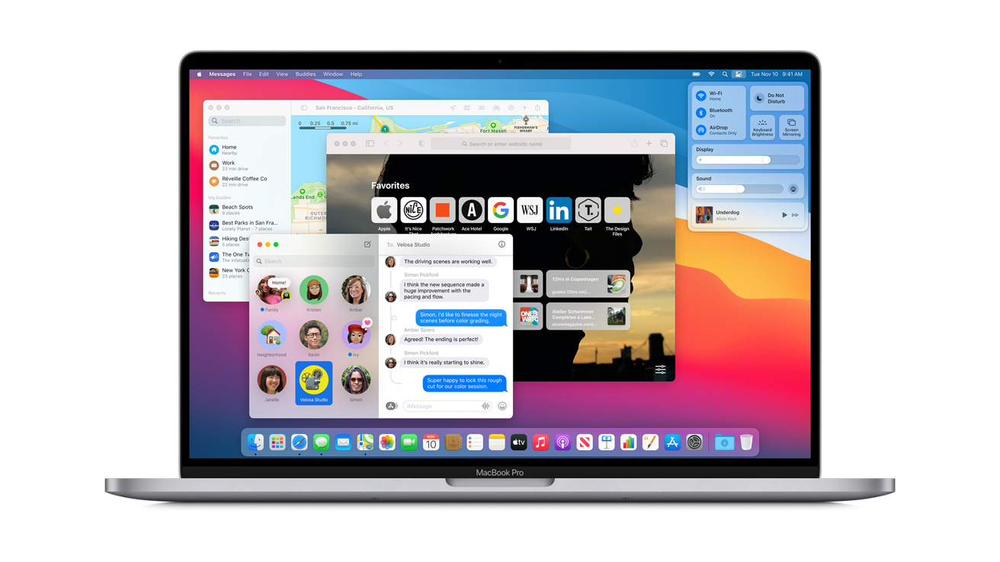

Sistemi macOS
Indice:
-
Breve storia di macOS
-
Vantaggi di macOS
-
Svanataggi do macOS
-
Conclusione
Breve storia di macOS
macOS è il sistema operativo sviluppato da Apple per i suoi computer Mac. La sua storia inizia negli anni ’80 con i primi Macintosh, ma l’attuale versione moderna deriva da NeXTSTEP, il sistema creato da Steve Jobs dopo aver lasciato Apple nel 1985. Quando Jobs tornò in azienda, Apple acquistò NeXT e da lì nacque Mac OS X, rilasciato nel 2001: un sistema basato su UNIX, molto più stabile e sicuro dei precedenti. Negli anni, Mac OS X è diventato macOS, evolvendosi con un design sempre più pulito, integrazione profonda con i dispositivi Apple e prestazioni ottimizzate.

Vantaggi di macOS:

Uno dei punti di forza principali di macOS è la sua stabilità, grazie alle fondamenta UNIX che lo rendono affidabile e resistente ai crash. Il sistema è anche altamente ottimizzato per l'hardware su cui gira: Apple progetta sia i computer che il software, ottenendo una sinergia quasi perfetta.
L'interfaccia grafica è intuitiva e coerente, pensata per essere chiara e gradevole da usare, anche per chi non è esperto.
La sicurezza è un altro pilastro importante: Apple controlla l'ambiente applicativo tramite il Mac App Store e sistemi di protezione come Gatekeeper e XProtect.
Infine, macOS è perfettamente integrato con gli altri dispositivi Apple: con Handoff, AirDrop, iCloud e la sincronizzazione continua, si può passare da iPhone a Mac senza soluzione di continuità.
Svantaggi di macOS:
Il primo limite evidente è il prezzo: i computer Apple sono costosi e difficilmente aggiornabili, con componenti spesso saldati alla scheda madre.
Inoltre, macOS ha compatibilità ridotta rispetto a Windows: molti giochi e software specifici per settori tecnici o industriali non sono disponibili o funzionano solo con emulatori.
La personalizzazione del sistema è limitata: Apple privilegia la coerenza e la sicurezza rispetto alla libertà dell'utente, il che può risultare frustrante per chi ama modificare il proprio ambiente.
Anche la riparabilità è scarsa: le politiche di Apple rendono complicato intervenire sull'ardware o sostituire parti, spingendo l'utente verso l'assistenza ufficiale o il ricambio completo del dispositivo.
Conclusione
macOS rappresenta una combinazione di eleganza, sicurezza e stabilità. È pensato per utenti che cercano un’esperienza fluida e integrata, non per chi vuole intervenire a fondo sul sistema. Ideale per professionisti della grafica, del video, della musica e per chi lavora nell’ecosistema Apple, meno adatto a chi desidera la massima libertà o ha bisogno di compatibilità totale con tutti i software. In breve, è un sistema che punta più all’equilibrio e alla qualità d’uso che alla versatilità estrema.